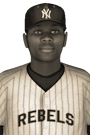

|
|
|  | ABL's Best Hurler is Jones Tuesday, August 19th, 1924 Crawford Jones was the most outstanding pitcher in the Atlantic Baseball League this year and today was acclaimed the ABL Pitcher of the Year winner for his efforts. Jones had a marvelous season, going 8-2 with an impressive 1.36 ERA in 11 starts. He struck out 104 in 79.2 innings and limited opposing batters to a .175 batting average. He received 9 first place votes out of a possible 14. Mathéo Munger of the Halifax Highlanders finished second in voting with 5 first place votes, while Bunnawat Phomee of the Quebec City Jr. Nordiques finished third. Player - Team - First Place - Total Points Crawford Jones - Montreal Jr. Royales - 9 - 83 Mathéo Munger - Halifax Highlanders - 5 - 63 Bunnawat Phomee - Quebec City Jr. Nordiques - 0 - 46 Christian Tauzin - Providence Bruins - 0 - 22 Jame Narcisse - Drummondville Voltigeurs - 0 - 12 Chaiya Junjira - Halifax Highlanders - 0 - 7 Kevin Gibb - Montreal Jr. Royales - 0 - 4 Daniel Lotts - St. John's Mariners - 0 - 1 |   |